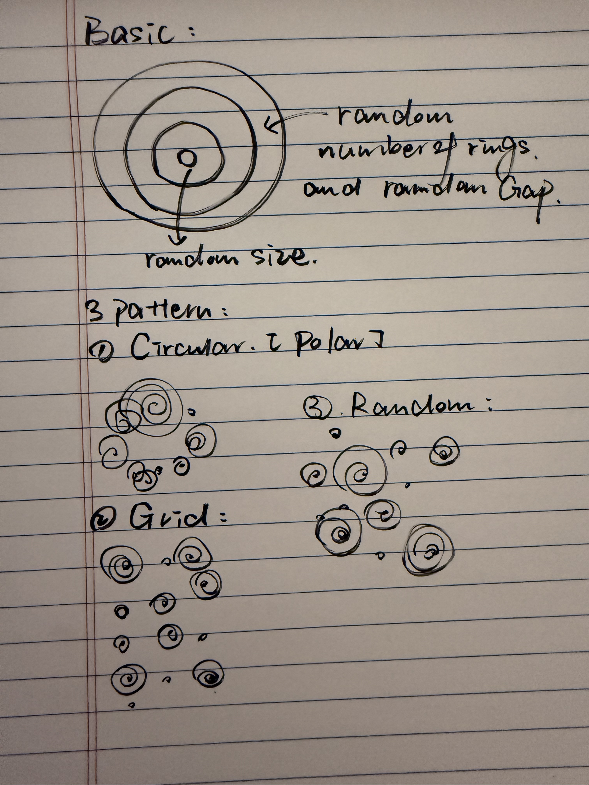
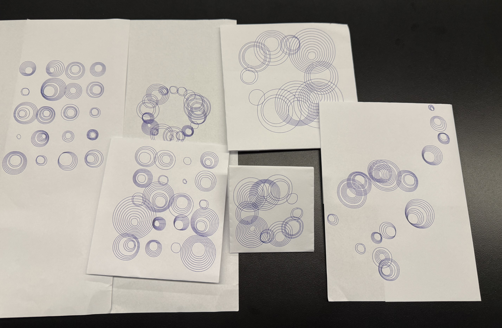
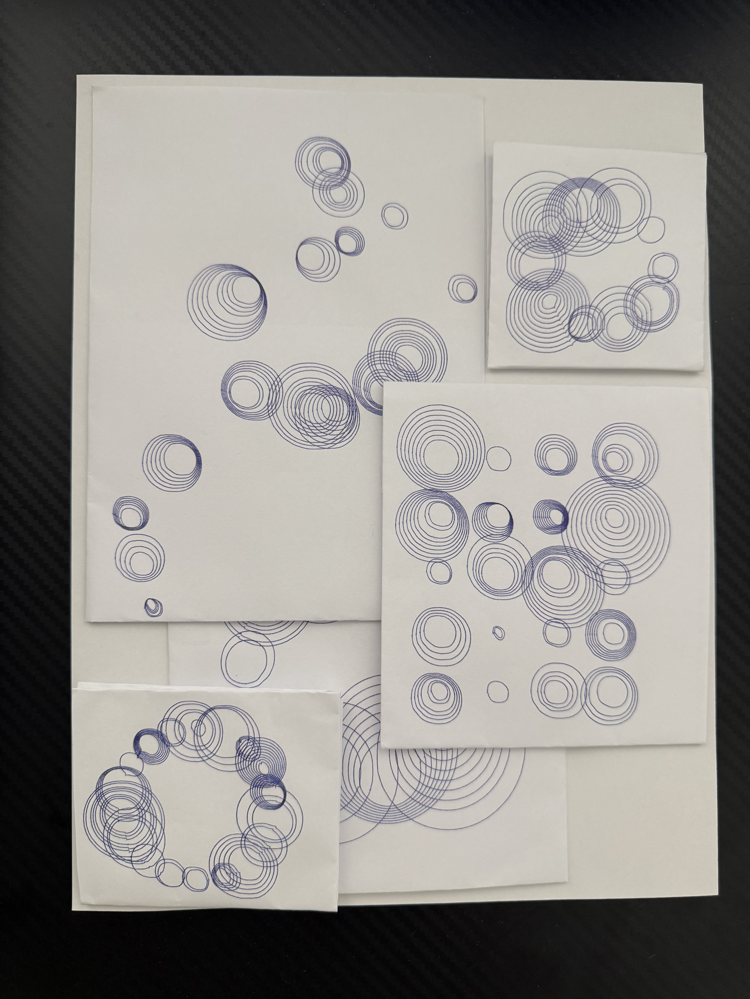

For this assignment, I wanted to try creating generative art using only the simplest shapes, so I ultimately chose circles. The simpler the shape, the more I can focus on the arrangement, repetition, and variation themselves.The artwork primarily features three types of arrangements. The first uses p5.Polar to create a circular arrangement; the second uses a nested for loop to create a grid; and the third uses random to generate a more free-form arrangement. Each group of circles also varies in terms of the number of circles, their size, spacing, and slight positional shifts; some rings are also randomly omitted.
In terms of code structure, I directly used the template provided by the instructor. I kept the original code for the UI, Regenerate, Export SVG, the random seed, and the SVG output. I mainly modified the contents of myDrawing and added three pattern functions, drawPolarCircle, and drawCircles. I also added a mode parameter so that the Regenerate function can switch between the three arrangement styles. For me, this assignment served as a review of the material covered so far. I revisited the use of for loops, nested loops, random functions, conditional statements, transformations, and p5.Polar. What I found most interesting is that even with something as simple as a circle, simply changing the rules and the degree of randomness can produce a wide variety of different results.


